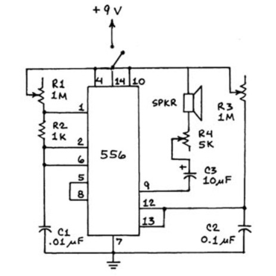

Clea Joy Ramos - E&D I - February - March 2021
In this project, we learned about soldering and circuits in order to create a synthesizer using a speaker, potentiometers, and more electrical components. Then we designed an acrylic enclosure for the synthesizer with 3D printed knobs.
Part I: Construction on Breadboard
Part II: Construction on Perfboard
Part III: Construction of Synth Enclosure
I first gathered the materials needed for the synthesizer and labeled all its components.
Resistors Capacitators |
 |
Next, I tested my potentiometers with a multimeter to identify which way the current flowed and labeled them. Next, I soldered black and red wires to the potentiometers and I soldered yellow neutral wires the switch so that they could be connected to the circuit.
 |
| Potentiometers and Switch soldered to wires |
|---|
Then, I constructed my breadboard by inserting the chip, the potentiometers, the switch, resistors and the capacitors along with wires that would complete the circuit. The last items I connected were the speaker, battery clip and the battery. I used written instructions, pictures, and the schematic to help me place the components and the wires in the correct place.
|  | |
| Synthesizer Schematics | Close up of Completed Breadboard |
|---|
This project introduced many new concepts and skills such as soldering and composing a breadboard which printed some challenges and difficulties. For example, when soldering wires to the switch, I initially had a cold solder because I did not get the components hot enough for the iron solder to attach well. After a few attempts of reheating the switch, I was able to successfully add more solder to form a solid joint between the wire and the switch.
Another difficulty I encountered was when I assembling and testing my breadboard. This was the first time I completed a circuit on a breadboard, so I was a little confused when following the instructions on how and where to place certain wires and components. When I finished my breadboard and adjusted the potentiometers, the speaker did not make sound. So, I tested components like my chip, and I compared my breadboard to the example breadboard that Ms. Riley had made. This method of checking helped me to identify incorrect placements of some wires. Once I found my errors, I turned on the switch and the potentiometers of the circuit, and the speaker finally produced sounds.
| Completed Breadboard Synthesizer | Video of Breadboard Synthesizer |
|---|
Once I finished constructing the breadboard, I transferred the components onto a perfboard to create a more permanent circuit. I used pictures of my breadboard to help me correctly transfer all of the wires and components. Then I soldered each component to the perfboard.
| Transferring electrical components from the breadboard (right) to the perfboard (left) |
|---|
At first, I found it challenging to correctly place some of the electrical components onto the perfboard because it was difficult to see which pin each wire was in. So, I had to be very careful when placing my electrical components in the correct holes. I frequently referenced my pictures of my breadboard to confirm the correct placement of the components. Additionally, it was difficult to solder the components in the small holes of the perfboard. I had to be very careful and make sure that the solder in one hole did not overflow into another hole because that might disrupt the flow of energy.
 |
||
| Completed Synthesizer perfboard | Close up of completed Synthesizer perfboard | Video of Perfboard Synthesizer |
|---|
After completing the soldering component of the synthesizer, we designed an enclosure to house the electrical components. The enclosure, made from wood and acrylic panels, must have raster/sketch elements as well as holes for the potentiometers, switch and openings for the sound of the speaker. We also designed 3D printed,press-fit knobs for the potentiometers.
When choosing a design for my enclosure, I wanted transparent panels and a minimal design so that the wiring and electrical components of the synthesizer were visible. So, after brainstorming different designs and color options, I choose a 90's, geometric pattern paired with transparent iridescent acrylic for the side panels and a clear acrylic for the top panel. I sketched designs for each of the 4 side panels and the top panel while keeping in mind the placement of holes for the different components of the synthesizer.
| Design Brainstorm | Design layout on side and top panels |
|---|
Then, I used my sketches as a reference and replicated the design with vectorized shapes and lines in an Adobe Illustrator file. I experimented with different raster settings as I wanted different shades to differentiate solid shapes and outlines. So, I filled some shapes with a gray color which produced a lighter raster, and other shapes were filled with black, which produced a darker raster. I also included circular holes for the potentiometers and switch. I arranged the speaker holes in a triangle so that it would match the geometric 90's pattern.
 |
|
| Vectorized design on Adobe Illustrator | Rastered and cut acrylic panels |
|---|
Before designing my knob toppers, I measured the heights and widths of the 5K and 1M potentiometers so that I could create a precisely fitting topper.
| Measurements of the 5K potentiometer | Measurements of 1M potentiometers |
|---|
| Front View of 1M Potentiometer | Bottom View of 1M Potentiometer | Front View of 5K Potentiometer | Bottom View of 5K Potentiometer |
|---|
I chose to print my toppers in the clear and white filaments to match the frosted white look of the rastered shapes on my panels. When preparing the GCODE file, I had to position my toppers upside-down, and I had to add support to the shapes. After my knobs were printed, I fitted them onto the potentiometers. Both of them had a loose fit, so I adjusted my knobs by scaling them down to 97% on Ulitmaker Cura .
| 1M Knob GCODE file | 5K Knob GCODE file | Printed 1M and 5K Knobs |
|---|
Before assembling my enclosure, I had to insulate my perfboard with hot glue to make sure that the wiring and electrical components were secure. To assemble my enclosure, I pieced together the precut wooden base and cut 4 wooden dowels for the corners of the box. I placed the synthesizer perfboard and the battery into the precut slots of the base. Then, I placed the potentiometers, the switch, and the speaker into/next to their corresponding holes in the top and side acrylic panels. I secured the potentiometers with washers and nuts. Then I placed the panels onto the wooden base. Finally, I placed the knob toppers onto the potentiometers.
| Partially Assembled Enclosure |
|---|
| Asymmetric View of Switch | Asymmetric View of Speaker Holes | Front View | Asymmetric Top View |
|---|
| Video of Completed Synthesizer |
|---|